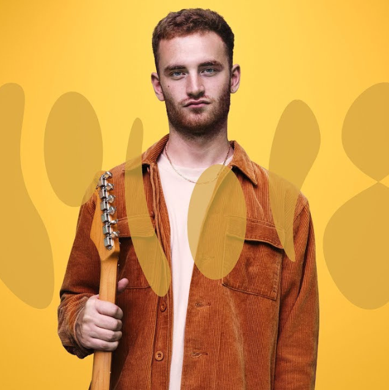
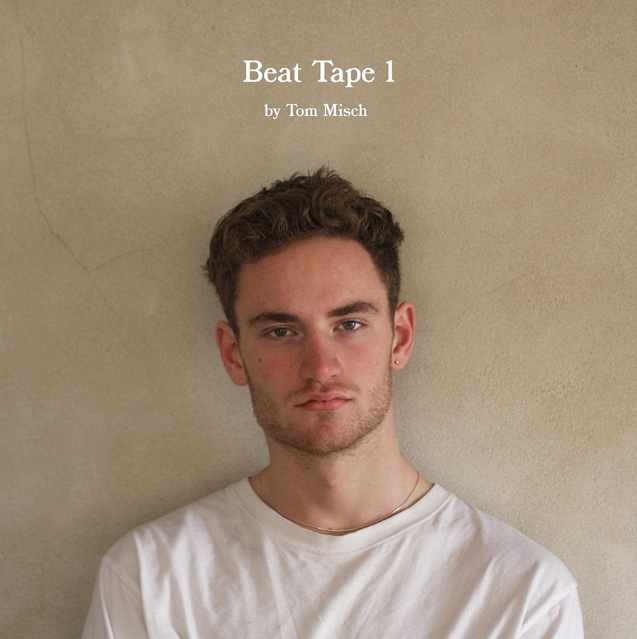
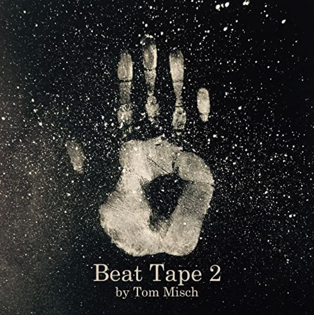
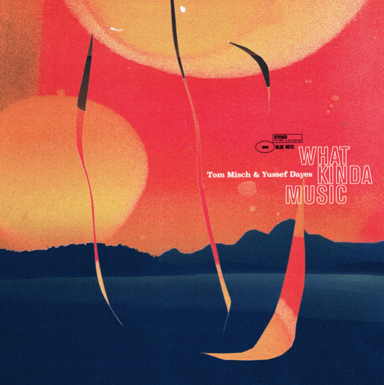
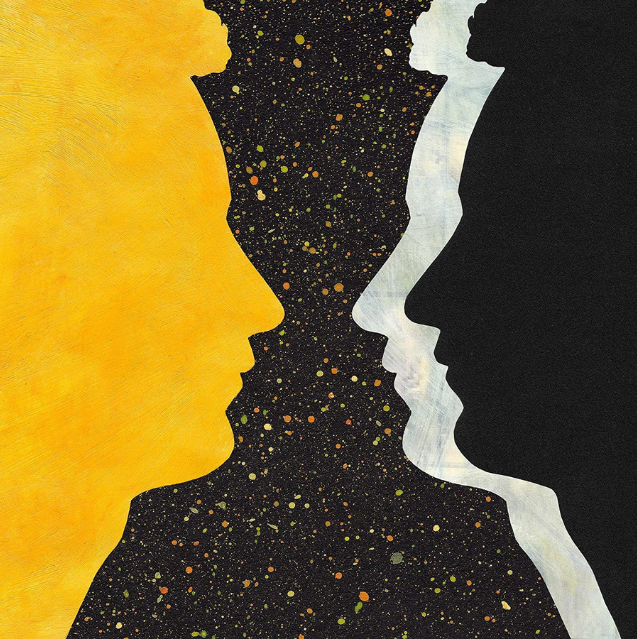

Tom Misch
Guitariste et producteur anglais

Biographie Personnelle
Thomas Abraham Misch est né en 1995 à Londres. Dès ses 4 ans, Tom s'intéresse à la musique, il commence par le violon grâce à la méthode Suzuki. Il a étudié la musique à la Langley Park School for Boys. Adolescent, il découvre la guitare grâce aux groupes Nirvana et Red Hot Chili Peppers. S’ajoute à cela la découverte du Hip Hop, il s'inspire alors du travail de J Dilla. En 2011, il s'inscrit sur Soundcloud et commence à publier ses premiers morceaux en 2012. Près de 200 000 adeptes sont attirés par ce mélange d’un style Jazz et Hip Hop. En 2014, il s'inscrit au département guitare jazz du Conservatoire de musique de Trinity Laban, mais il y restera peu, et cela pour se consacrer à sa propre musique.
Biographie Professionnelle
La première mixtape de Tom est publiée en 2014. Son premier album et succès, intitulé "Geography", sort le 6 avril 2018. Album qui devient disque d'argent, atteint le TOP 10 UK et prend la tête du classement Contemporary Jazz de Billboard. Au cours de sa carrière, Tom collabore avec de nombreux artistes tels que le percussionniste, batteur de jazz anglais Yussef Dayes et le saxophoniste Kaidi Akinnbi. Il a réalisé une tournée aux USA et a notamment joué au célèbre festival Coachella. En 2021, Tom Misch publie son dernier album en date " Quarantine Sessions "composé de 8 morceaux principalement de jams sessions instrumentales avec trois morceaux originaux et reprises comme Smells Like Teen Spirit de Nirvana.





Albums (2015 - 2021):
- 2014- Beat Tape 1
- 2015- Beat Tape 2
- 2018- Geography
- 2020- What Kinda Musique
- 2021- Quarantine Sessions